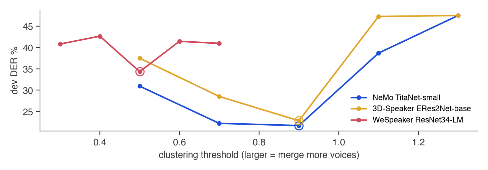
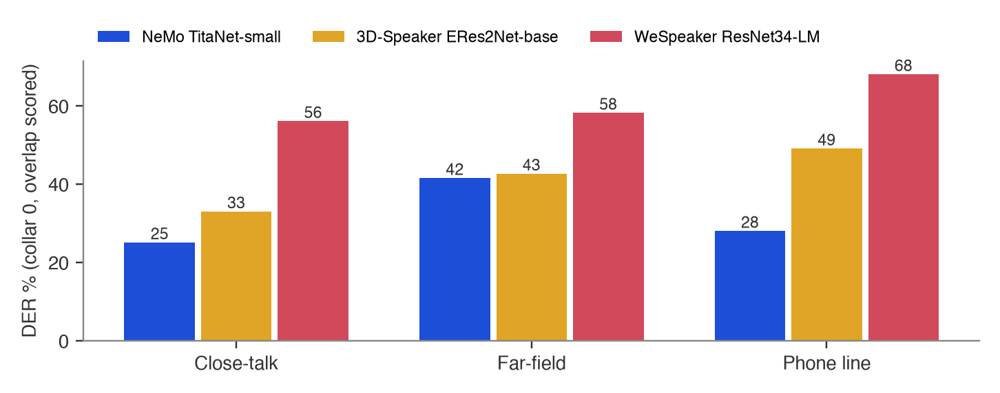
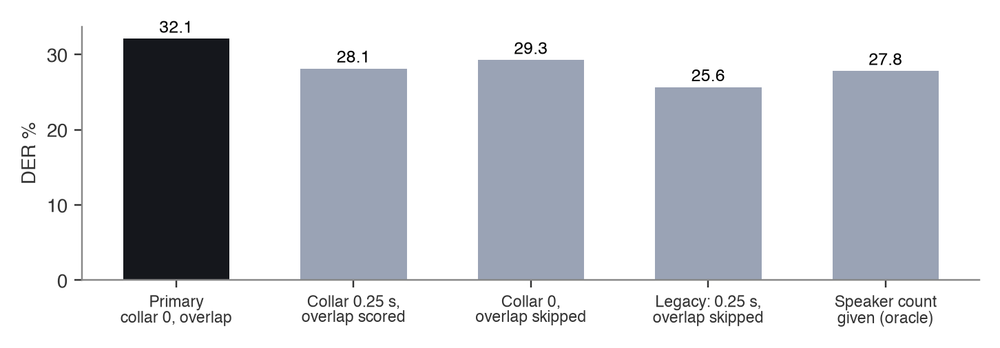

The design above is mostly about decisions. To check that those decisions matter in practice, I ran a small version end to end on a laptop: real public audio, three systems, the same scorer settings as the proposed leaderboard, and the same statistics. Everything here is reproducible with scripts/setup.sh and scripts/run_all.sh in the repo.
{total_min} minutes of audio across 8 files: two AMI test meetings in three conditions each (the same conversation through a headset mix, a single far-field array mic, and the headset mix passed through a simulated phone line: 300–3400 Hz band-pass, 8 kHz G.711 μ-law), plus two VoxConverse test clips (a news-style clip with 11 speakers and a two-person conversation). Reusing the same AMI conversations across conditions means the condition comparison is not confused by "this meeting is just harder".
| File | Source | Condition | Minutes | Speakers | Overlap | Turns < 1 s |
|---|
References: AMI word-aligned "only_words" RTTMs from the pyannote AMI-diarization-setup; VoxConverse official test RTTMs. Audio from the diarizers-community parquet mirrors of the same corpora (the Edinburgh AMI mirror was returning HTTP 503 on the day). Overlap = share of the scored time where 2+ reference speakers talk.
All three are open-source pipelines run offline on CPU (Apple M1, 4 threads) through sherpa-onnx 2.0.3. They share the same segmentation model (pyannote segmentation-3.0, which finds speech and handles up to three local speakers per 10 s window) and differ only in the speaker-embedding model, the part that decides whether two stretches of speech are the same voice. That makes this a clean test of one component, which is exactly the sort of question a model builder would bring to the leaderboard. Post-processing was identical: minimum speech 0.3 s, minimum gap 0.5 s, agglomerative clustering on embeddings.
| System | ID | Threshold chosen on dev | Grid tried |
|---|
Clustering needs a threshold for "same speaker". Following the "declared config, no tuning on test" rule from section 2, I tuned it per system on a separate dev split (a different AMI meeting in close-talk and far-field, and two other VoxConverse clips) and froze it before touching the test files.

| System | DER | 95% CI | Missed | False al. | Confusion | JER | Count exact | |Count err| | Overlap DER | Short-turn recall | RTF |
|---|
All values in %, except count error (speakers) and RTF (processing time ÷ audio time, CPU). DER pooled over all 8 files. CI: 2,000 bootstrap resamples of 60-second blocks with the speaker mapping fixed per file. JER from dscore (DIHARD definition), averaged over files. RTF is indicative only: some runs shared the CPU with other jobs, so speed is not comparable across systems here.

| Comparison | DER gap (pts) | 95% CI of gap | Resamples where first is better | Separate band? |
|---|

| System | DER, count unknown | DER, count given | Change | Confusion, unknown | Confusion, given |
|---|
Every one of the {xcheck_n} system-file pairs was scored by both pyannote.metrics 4.2.0 and dscore (collar 0, overlap scored). The largest DER difference was {xcheck_max} points. JER differs slightly between the two tools because they define it slightly differently, so the table reports dscore's JER, the DIHARD definition.